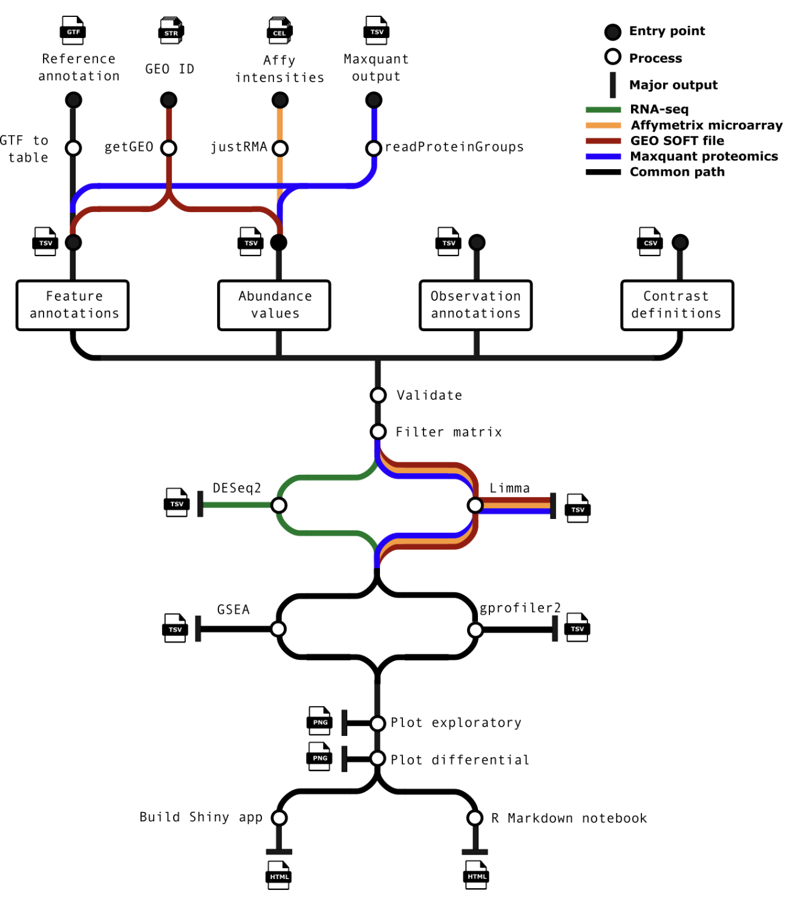
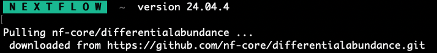
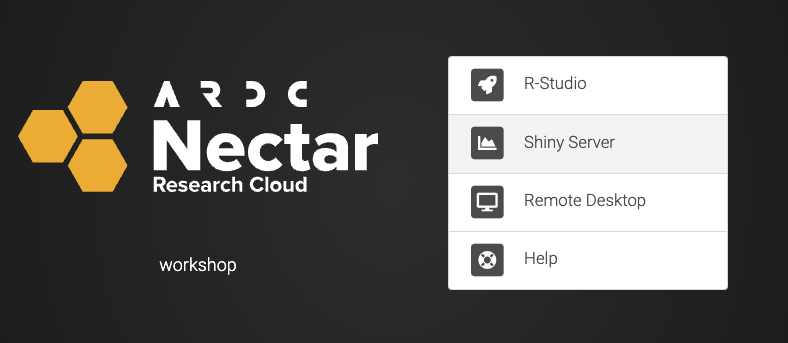
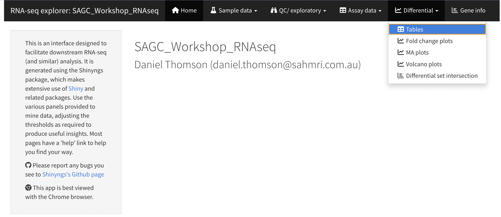
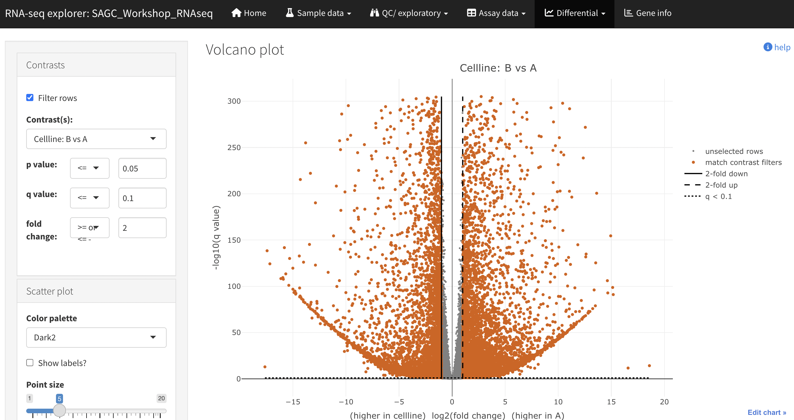
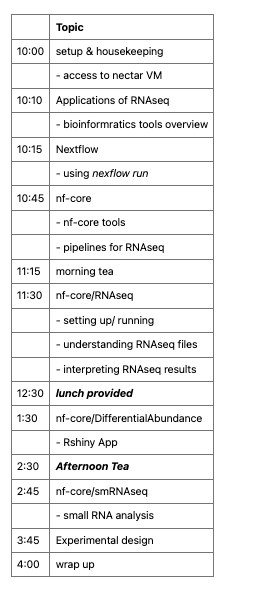
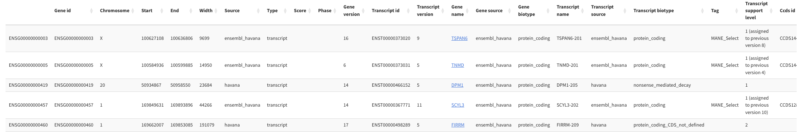

nf-core/DifferentialAbundance

nf-core/DifferentialAbundance
There are a few ways of installing the nf-core pipeline. But this happens automatically when you use a nexflow run nf-core/ commands. You can check the ~/.nextflow/assets folders to see what is already installed
ls -l ~/.nextflow/assets/nf-core/If you don’t see the pipeline, you can pull it from the nf-core website.
nextflow pull nf-core/differentialabundancebut this happeds automatically when running the nextflow run nf-core/differentialabundance

R Shiny App
- one of the key outputs from the nf-core/DifferentialAbundance pipeline is an Shiny app.
- This runs R processes in the background and presents the data as a site.
- One way to run the app is to kick it off in R studio, to do this you can download the App directory and use the following R code to open it.
Launching the App on your local R Studio
option 1
The easiest way to run your R shiny app is using R studio.
Firstly, you will need to download the nf-core/DifferentialAbundance outputs which you have generated to your pc using scp.
IP=[yourIPaddress]
mkdir -p ~/workshop_RNAseq/nfDifferentialAbundance
scp -r workshop@$IP:/home/workshop/workshop/nfDifferentialAbundance/outs/ ~/workshop_RNAseq/nfDifferentialAbundance/
cd ~/workshop_RNAseq/nfDifferentialAbundance/outsOpen R studio, and paste the following R code. This also requires installation of a few packages in Rstudio including the *shinyngs package. The installation code is hashed out in this case.
Within R studio, in the top left panel you can paste this code
##To run shiny App
# run this in R studio
# install packages
install.packages("remotes")
remotes::install_github("pinin4fjords/shinyngs")
library(remotes)
library(shinyngs)
library(markdown)
# if you have downloaded the app locally then you will need to add your path to the working directory
# if you downloaded it to the directory described above, this is where it will be '~/workshop_RNAseq/nfDifferentialAbundance'
setwd("/Users/danielthomson/workshop_RNAseq/nfDifferentialAbundance/outs/shinyngs_app/SAGC_Workshop_RNAseq")
#####
esel <- readRDS("data.rds") # you need to navigate to the 'shinyngs_app' directory
app <- prepareApp("rnaseq", esel)
shiny::shinyApp(app$ui, app$server)Using Rstudio via Nectar
option 2
You can also run Rstudio from a virual machine. In some cases this is preferable when dealing with large datasets, where you can control the compute resources used. \
| setting | Description |
|---|---|
| Host | use the instance IP address, or the hostname [hostname].[project].cloud.edu.au |
| Login | use the username you created in the Configure Application dialog |
you shoulud see the following login page, access with your passoword

Within R studio, in the top left panel you can paste this code, making sure the path to the app directory is correct.
##To run shiny App
# run this in R studio
#######################
# install packages
#install.packages("remotes")
#if (!require("BiocManager", quietly = TRUE))
# install.packages("BiocManager")
#BiocManager::install(c("SummarizedExperiment", "GSEABase", "limma"), force = TRUE)
#devtools::install_github('pinin4fjords/shinyngs', force = TRUE)
library(remotes)
library(shinyngs)
library(markdown)
#######################
# navigate to where the shiny app is
# if you are working on Rstudio running on your nectar instance, then this should be in the 'out' directory from where you ran the nf-core/DiferentialAbundance pipeline
setwd("/home/workshop/workshop/nfDifferentialAbundance/outs/shinyngs_app/SAGC_Workshop_RNAseq/")
#####
esel <- readRDS("data.rds") # you need to navigate to the 'shinyngs_app' directory
app <- prepareApp("rnaseq", esel)
shiny::shinyApp(app$ui, app$server)Interractive RNAseq data analysis
This previous step is worth the hastle, because it gives you access to the R Shiny App with all your results available.

From here, you will see all the parameters you set up in your nextflow run kickoff script. And it will give you access to the data analysis.
Once you’ve made it to this point take some time to navigate around. You will see interactive versions of many key differential expression analysis tools. In the background, it is being run in your Rstudio session.
Now that we have done the combined work of what would take days writing R code for DEseq2 and ggplot2, there is a fair bit to unpack and understand
We’ll walk through some of the key analysis, results.

 You can see from the ‘Experimental data’ page, all of the information came from the sample sheet provided to nf-core/DifferentialAbudance.
cd home/workshop/workshop/nfDifferentialAbundance/
cat SampleSheet.csv sample,fastq_1,fastq_2,treatment,cellline,condition Acontrol1,,,control,A,Acontrol Acontrol2,,,control,A,Acontrol Acontrol3,,,control,A,Acontrol Acontrol4,,,control,A,Acontrol Atreated1,,,treated,A,Atreated Atreated2,,,treated,A,Atreated Atreated3,,,treated,A,Atreated Atreated4,,,treated,A,Atreated Bcontrol1,,,control,B,Bcontrol Bcontrol2,,,control,B,Bcontrol Bcontrol3,,,control,B,Bcontrol Bcontrol4,,,control,B,Bcontrol Btreated1,,,treated,B,Btreated Btreated2,,,treated,B,Btreated Btreated3,,,treated,B,Btreated Btreated4,,,treated,B,Btreated
cat contrasts.csv id,variable,reference,target
cellline,cellline,A,B
treatedVScontrol1,condition,Acontrol,Atreated
treatedVScontrol2,condition,Bcontrol,Btreated
There is the opportunity to add as many extra columns to this table, which will all provide extra possible comparisons to the app.

Looking at the ‘row metadata’ page, you can see that all the gene information comes from the gtf file which we used.
For well annotated genomes like Hg38 (human) there is alot of extra information that can be pulled out.
head -n 10 genome.gtfhead -n 10 genome.gtf